Ascendrya · version testée 10.12.1 (24/11, 17 h 02)
Bilan d'ergonomie et cible 10.13
Tout le jeu passé en revue sur PC (1878 × 1245 et 1116 × 993) et téléphone (412 × 915), avec une partie avancée et une partie neuve jouée 5 minutes par un joueur automatique. Pour chaque écran : ce qui est à l'écran aujourd'hui, ce qui ne va pas, et la maquette cible dans le style de la Forge.
Ce qui marche déjà
- La Forge : chaque action a son image, un titre court, un coût en cases et un bouton doré. C'est le modèle de toute la 10.13.
- Les proportions et la lisibilité de la 10.12 sur téléphone.
- Le milieu de l'écran de combat (scène, héros, compagnons).
Ce qui ne va pas
- Sur PC, les onglets restent en style « page web » : petites cases, texte seul, vide à droite.
- « Remettre au niveau » existe encore, et c'est même le bouton doré d'un joueur neuf.
- Changer un effet est caché derrière « Plus… ».
- L'écran de combat : icônes d'événement mal cadrées, carte de zone qui se chevauche, bas d'écran éparpillé.
- On peut équiper depuis Compagnons, ce qui embrouille.
Équipement et fiche d'objet
ImportantPrompt PC § 2 et § 3« Les textes comme la Croc de l'Alpha manquent d'illustration, comme sur la photo fournie par ChatGPT. La possibilité de remettre au niveau un objet ne devrait pas exister. »
Aujourd'hui
- Sur PC, la fiche est une colonne de texte serré : petite icône de 40 px, lignes de stats, aucune image pour l'effet.
- Le bandeau jaune « Presque sans effet » pousse « Remettre au niveau (840 éclats) », en doré, avant même « Renforcer ».
- Sur téléphone, un joueur neuf voit « Remettre au niveau (6 éclats) » dès la 2e minute.
- Filtres du sac en liste déroulante, colonnes collées à gauche.
Cible
- Trois colonnes : personnage, sac en grille, détails illustrés comme la maquette ChatGPT.
- Grande case 110 px avec l'image de l'objet, rareté, Renfort +3/13, stat principale en grand.
- Modes « Améliorer · Reforger · Équiper » en grosses tuiles.
- « Remettre au niveau » supprimé partout (code, équilibrage, tests, textes). À la place : « ⚠ Objet dépassé · Trouver mieux › ».


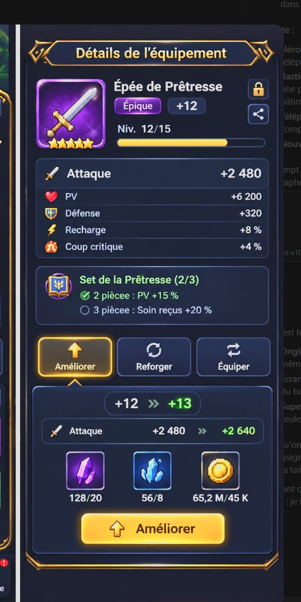
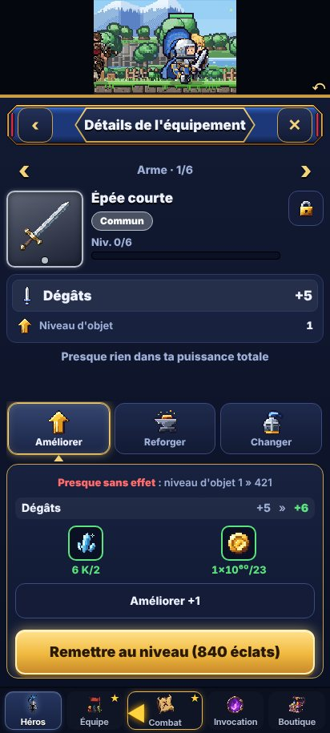
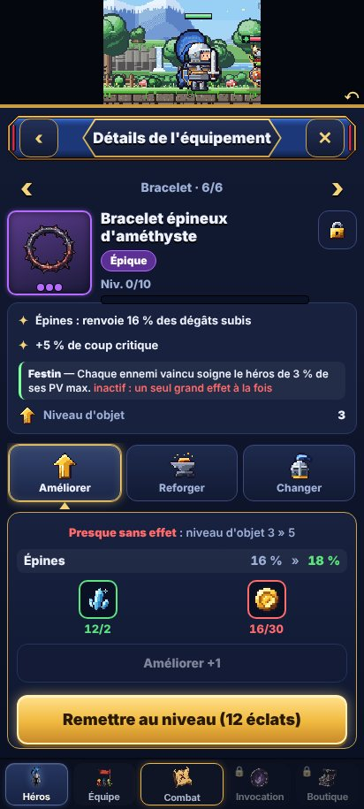
Changer l'effet (Reforger)
ImportantPrompt PC § 3« Pour changer un effet pareil, il faudrait voir directement les boutons et les illustrations qui ressortent, là c'est pas visible. »
Aujourd'hui
- Une ligne repliée « Plus : changer l'effet, remettre au niveau » en bas de la fiche, qu'on ne remarque pas.
- Aucune image, aucun coût visible avant d'ouvrir.
Cible
- Trois cartes illustrées toujours visibles, comme les étapes de la Forge : Changer l'effet (20 éclats), Relance orientée (60), Changer le type (40).
- Après un changement : ancien et nouvel effet côte à côte, « Garder » ou « Revenir ».


Compétences
ImportantPrompt PC § 4« Pour l'onglet Compétences l'ergonomie est pas top du tout, on a l'impression d'être sur un jeu par navigateur. »
Aujourd'hui
- Deux rangées de petites cases de 40 px collées à gauche, le reste du cadre vide.
- Le détail tient en une ligne de texte, sans aperçu ni comparaison.
- On ne voit pas sa barre de combat ni ce qui est actif.
Cible
- À gauche, « Ta barre de combat » : le héros et ses 3 emplacements ronds, puis les boosts Q à T.
- Au centre, cartes 3 × 2 avec grande icône, étiquette, recharge et pastille « Active ».
- À droite, aperçu en combat, Nv 5 » Nv 6, Dégâts et Recharge avant » après, et pourquoi on ne peut pas (« prochain point au niveau 152 »).


Talents
MoyenPrompt PC § 5« Pour les talents la présentation est pas si belle. »
Aujourd'hui
- Trois petites cartes avec une icône, « Bonus : — » et un bouton gris, beaucoup de vide autour.
- Rien ne dit ce que les talents donnent déjà.
Cible
- Trois branches en grandes cartes illustrées, piste de 15 paliers, carte « Prochain talent » et coût en fragments.
- Bloc « Ce que tes talents te donnent déjà » en 6 tuiles.
- « Voir l'arbre complet » et « Apprendre le meilleur ».


Renaissance
MoyenPrompt PC § 5Aujourd'hui
- Un phénix en petit, des chiffres alignés en tableau, un long texte gris.
- Le choix « est-ce rentable ? » se lit mal.
Cible
- Le phénix en grand à gauche, Puissance avant » après en gros chiffres.
- « Ce que tu gagnes » en 3 tuiles, « Ce qui se passe » en clair (gardé en vert, remis à zéro en rouge).
- Bande verte « Rentable maintenant » et un gros bouton doré « Renaître · +91 ».

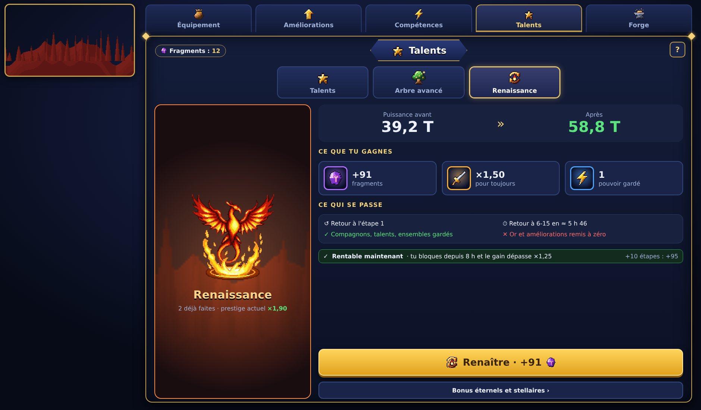
Compagnons
MoyenPrompt PC § 6« Compagnons, ça fait léger la présentation. On doit pouvoir équiper que dans Équipement à mon avis. »
Aujourd'hui
- Une rangée de petites têtes, deux gros boutons jaunes (« Équiper toute l'équipe », « Améliorer l'équipe ») et une grille de cartes serrées.
- La fiche s'ouvre en fenêtre avec « Équiper… », qui veut dire « mettre dans l'équipe » mais se confond avec les objets.
Cible
- Bandeau « Ton équipe » illustré avec les 3 compagnons en grand et le familier.
- Grille de portraits et fiche toujours visible à droite : grand portrait, stats, 3 compétences illustrées.
- Un seul bouton doré, « Mettre dans l'équipe ».
- Les objets s'équipent seulement dans Héros › Équipement : « Équiper toute l'équipe » y déménage, et « Objets portés › » y mène.


Recherches du Bastion
ImportantPrompt PC § 7« La page de Recherche rend pas bien, manque de lisibilité et d'ergonomie. »
Aujourd'hui
- Le livre est joli, mais les noms sont écrits sur l'image, en petit et à moitié effacés.
- « Lancer » est gris, et la raison (« Construis d'abord la Bibliothèque ») est un petit texte rouge en dessous.
- Les ouvriers ne se voient pas.
Cible
- Branches en grandes tuiles illustrées, paliers en boutons.
- Livre en parchemin uni : nœuds de 112 px, nom foncé lisible dessous, liens entre les cercles seulement.
- Bandeau « La Bibliothèque n'est pas construite · Construire › » en haut du livre.
- Détail avec avant » après, coûts en cases, et les 5 ouvriers en bas.


Écran de combat
ImportantPrompt PC § 8« Les icônes de Marché, Prime, etc. sont mal mises dans le cadre. Pour l'avancée je ne vois plus parce que j'ai des icônes qui se superposent. La partie basse, les quêtes et les sorts, ça ne rend pas bien. »
Aujourd'hui
- Événements : l'image dépasse ou colle en haut du cadre, le minuteur mord sur l'image.
- Carte de zone : les compteurs 3/3, 0/3, 0/1 recouvrent la piste des étapes.
- Bas : vague, malédiction, PV, sort, « Tout récupérer » et coffre flottent séparément sur le mur de briques.
- La bulle « Bonus du moment » sort de l'écran à droite.
Cible
- Événements dans un seul cadre doré : image centrée dans un carré de 76 px, minuteur dessous, nom, pastille à l'extérieur.
- Carte de zone en 3 lignes : titre, piste avec boss, compteurs dans leur propre rangée.
- Quêtes et Carnet dans le même cadre que la zone.
- Une console en bas : sorts et Ultime, vague et PV, « Tout récupérer » et coffre.


Téléphone
Lot à partPrompt téléphoneLe téléphone garde le kit 10.12 et reçoit sa propre version des mêmes écrans. Ce lot ne touche pas le PC : ses règles sont réservées au téléphone, et les captures PC doivent rester identiques au pixel près après chaque lot téléphone (et inversement).
Aujourd'hui (412 × 915)
- Compétences : 6 petites cases en haut, le reste vide.
- Compagnons : « Équiper toute l'équipe » et « Améliorer l'équipe » en tête.
- Combat : compteurs de zone sur la piste, Bastion et coffre qui flottent sur les briques, vague tout en bas.
- Fiche : « Remettre au niveau » en doré.
- Mini-scène des onglets avec des bandes noires sur les côtés (correction pour le téléphone seulement, le PC ne change pas).
Cible
- Fiche avec les 3 choix de Reforger visibles en cartes illustrées.
- Compétences avec la barre de combat et des cartes 3 × 2.
- Talents en cartes illustrées, Compagnons avec bandeau d'équipe et portraits.
- Recherches en lignes lisibles sur parchemin.
- Combat : zone en 3 lignes, événements dans un cadre, une console en bas.
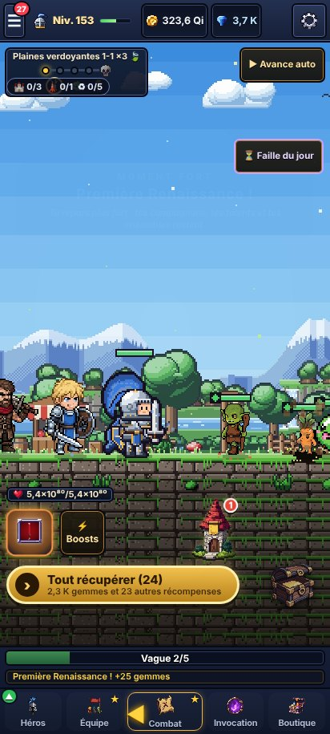
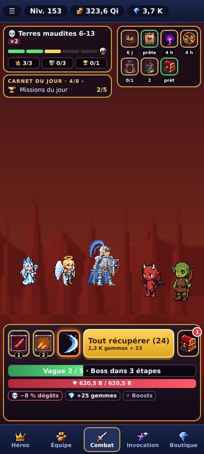
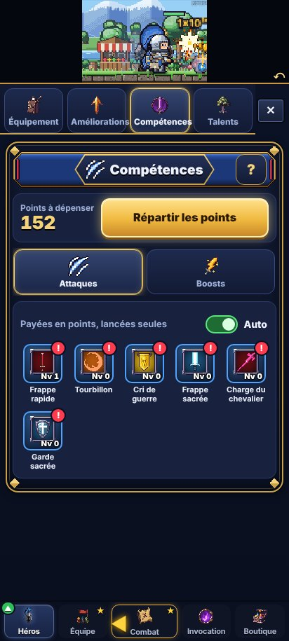
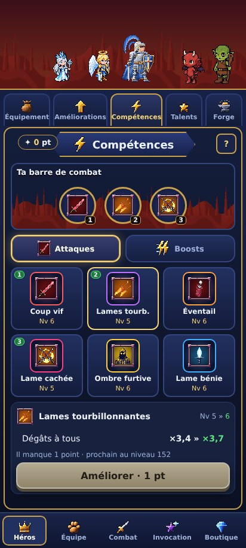
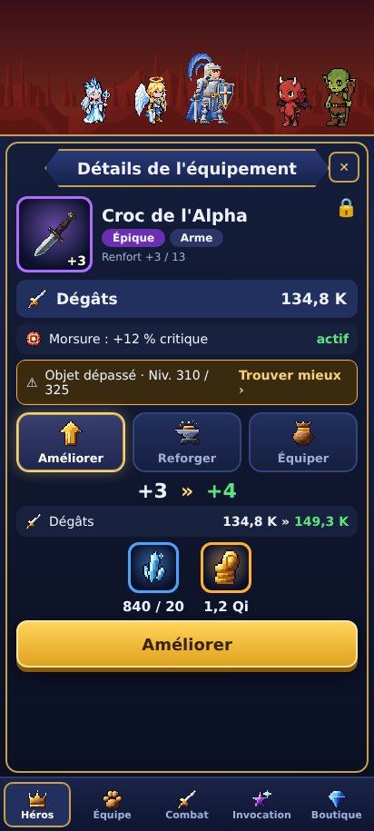
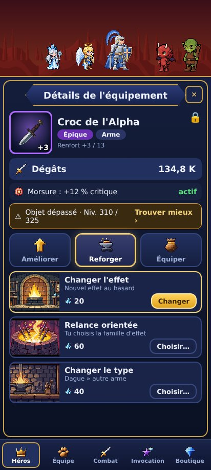
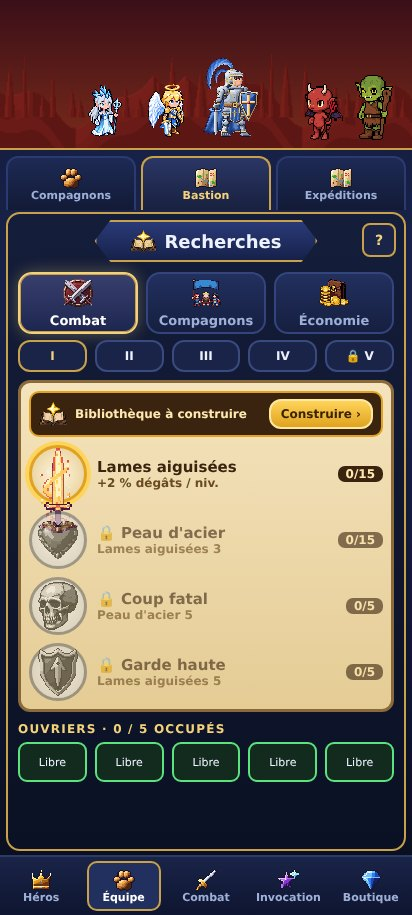
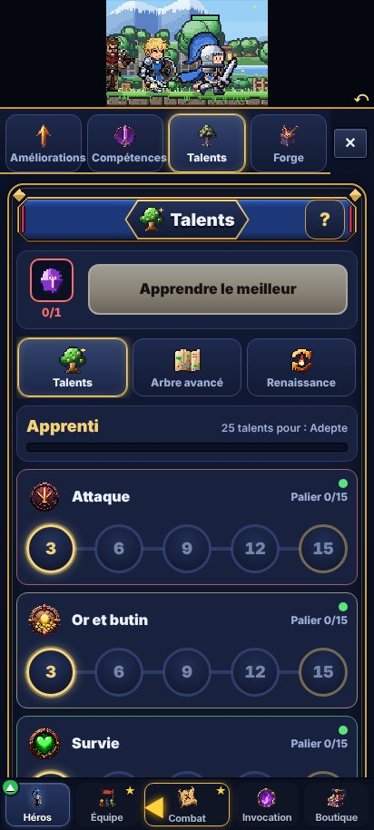
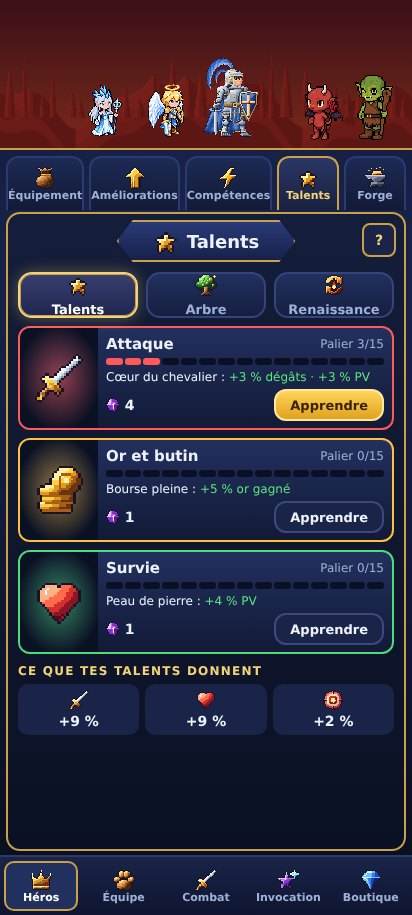
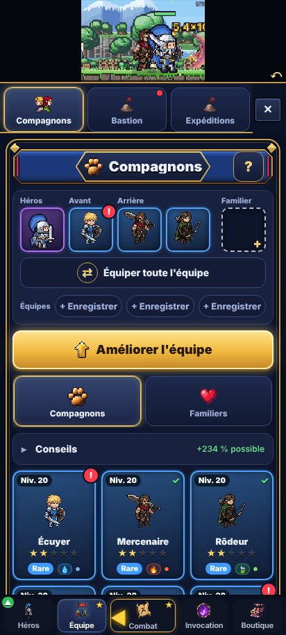
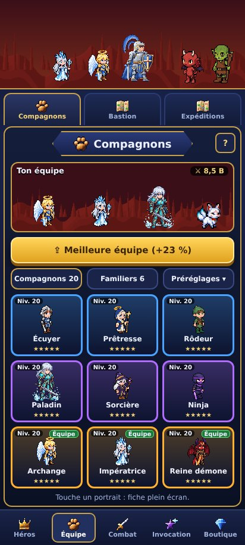
Partie neuve, 5 minutes
MoyenPrompts PC § 9 et téléphone § 8Joueur automatique qui suit le doigt du tutoriel et le Sceau, sur PC et sur téléphone. Ces constats viennent de son journal ; ils sont à confirmer à la main.
PC
- Après « Héros · 1 objet » (1 min 24), plus aucun conseil pendant 3 min 30.
- 400 à 650 d'or restent sans être dépensés, et l'or ne bouge plus pendant 75 s à l'étape 5.
- Étape 7 au bout de 5 minutes.
Téléphone
- Le doigt montre « Héros » pendant que le Sceau ouvre l'Invocation, puis « Équipement » contre la Forge : allers-retours pendant plus d'une minute.
- Un objet Légendaire à 2 min, avec « Remettre au niveau » en doré.
- Étape 10 au bout de 5 minutes.

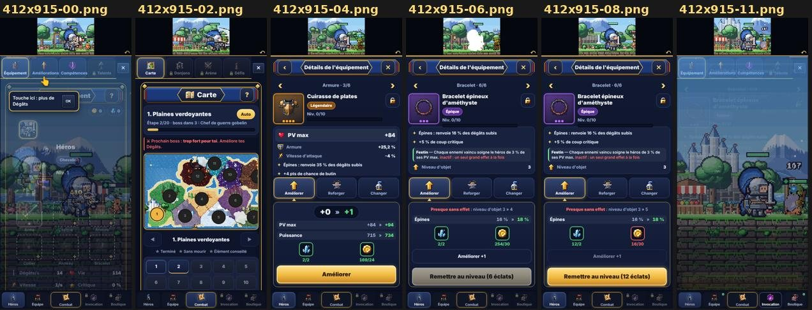
Contre les retours en arrière
RèglePrompts PC § 0 et téléphone § 0- Captures « avant » de chaque onglet en 6 tailles (4 PC, 2 téléphone), partie avancée et partie neuve, avant le premier commit.
- Liste des acquis 10.11 à 10.12 vérifiée à chaque lot : onglets centrés, compagnons hors des cadres, effets visibles dans Améliorations, ouvrier du Bastion, barre du bas et kit du téléphone, tutoriel.
- Rien n'est retiré de l'écran sans être remplacé. Seule exception voulue : « Remettre au niveau ».
- PC et téléphone séparés : un lot PC laisse le téléphone identique au pixel près, un lot téléphone laisse le PC identique. Seules la suppression de « Remettre au niveau » et « équiper seulement dans Équipement » touchent les deux.
- Pas de changement de règles, de coûts ni de gains.
- Aucun test supprimé pour passer : on corrige le code, pas le test.
- Nouveau contrôle
tools/desk-audit.mjs: pas de chevauchement, image d'événement dans son cadre, un seul bouton doré, une image pour chaque objet ou compétence, aucun « Remettre au niveau ». - Planche avant / après de chaque écran, relue à côté des maquettes avant de livrer.
Deux prompts pour Claude : prompt-v10.13-pc.zip (à faire d'abord) puis prompt-v10.13-telephone.zip. Chacun contient son PROMPT.md, ses captures, ses maquettes et leur code HTML.